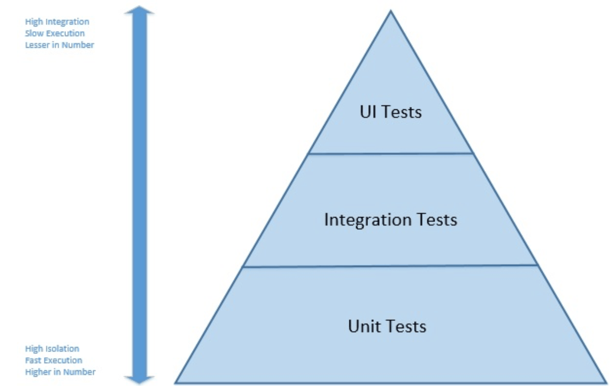

Testing Web Application
... is a software testing technique exclusively adopted to test the applications that are hosted on web in which the application interfaces and other functionalities are tested.
Benefits of Software Testing
- Proof application works
- Better quality
- Increased development velocity
- Improved productivity
- Prevents code aging
- Provides reliability
Different Types Of Software Testing
Functional Testing types include:
- Unit Testing
- Integration Testing
- System Testing
- Sanity Testing
- Smoke Testing
- Interface Testing
- Regression Testing
- Beta/Acceptance Testing
Non-functional Testing types include:
- Performance Testing
- Load Testing
- Stress Testing
- Volume Testing
- Security Testing
- Compatibility Testing
- Install Testing
- Recovery Testing
- Reliability Testing
- Usability Testing
- Compliance Testing
- Localization Testing
Unit Testing
testing of an individual software component or module is termed as Unit Testing. It is typically done by the programmer and not by testers, as it requires detailed knowledge of the internal program design and code.
Benefits:
- increases confidence in changing/ maintaining code
- сodes are more reusable
- development is faster
- the cost of fixing a defect detected during unit testing is lesser in comparison to that of defects detected at higher levels
- debugging is easy
- codes are more reliable
Integration Testing
testing of all integrated modules to verify the combined functionality after integration is termed as Integration Testing.

It allows avoiding situations as above.
Functional/End-to-end Testing
involves testing of a complete application environment in a situation that mimics real-world use, such as interacting with a database, using network communications, or interacting with other hardware, applications, or systems if appropriate.
Concept of Testing Pyramid
JS Testing tools and frameworks
- launch your tests in the browser or Node.js
- testing structure providers help you arrange your test files
- assertion functions check if the results a test returns are as expected
- generate and display test progress and results
- provide mocks, spies, and stubs
- generate and compare snapshots of component and data structures
- generate code coverage reports
- browser Controllers simulate user actions for Functional Tests
- visual Regression Tools are used to compare your site to its previous versions visually by using image comparison techniques
To achieve the most flexible set functionality, it’s common to use a combination of several tools.
General Prominent Testing Tools
Unit and Integration Tests Frameworks
Functional Testing Tools
Useful links
- Why testing is important in: Benefits of Software Testing
- Types Of Software Testing: Different Testing Types With Details
- Article Test Pyramid: the key to good automated test strategy
- Great overview of JavaScript Testing tools and popular frameworks
- Worth to read! Writing Testable Code